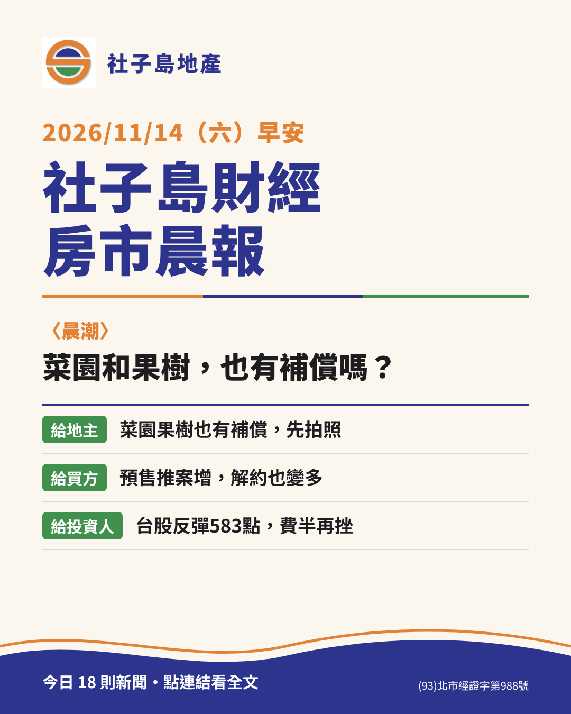

2026/11/14 (六) 早安
社子島財經房市晨報｜菜園和果樹，也有補償嗎？
今日 18 則財經與房市新聞，依主題分成 6 類，社子島、主商圈與台北市的新聞排在最前面。點標題就能開啟原文。
〈潮汐表〉今天的三道潮水
- 給地主菜園和果樹也有補償：快熟的按收成估、還早的按種植培育費用估；公告後新種的不補。現在先拍照、記下種植時間。
- 給買方北市第3季預售推案季增15%、以小社區為主，但預售屋解約件數年增約7成，簽約前先看清契約。
- 給投資人台股13日反彈583點，外資終止連11賣；美股週五費半跌逾3.4%，台積電ADR跌1.67%。
〈晨潮〉
菜園和果樹，也有補償嗎？
昨天在威靈廟，阿公望著鄰居的菜園問我們：「厝有補償，毋過阮這片菜、這幾欉果子樹，拆的時陣敢嘛有補償？是按怎算的？」答案是：有。房子叫建築改良物，田裡的菜、果樹、竹子，法律上叫「農作改良物」，區段徵收時跟著土地一起處理，一樣要查估、一樣要補償。
怎麼算，《土地徵收條例》第31條分成兩種情形。第一種，徵收的時候，離收成不到一年，例如菜快可以採、果樹今年就要結果，按成熟時的收成來估。第二種，離收成還超過一年，例如剛種下的小苗，按種植和培育花的費用，再參酌現值來估。簡單說：快收成的，算收成；還早的，算本錢。
菜園、果樹補償：記住四件事
- ① 離收成一年內：按成熟時的收成估；超過一年：按種植培育費用並參酌現值估
- ② 台北市依查估基準：果樹分種類、樹齡、結果與否；超過栽培限量的不補償
- ③ 公告後不得增加種植；查估後新種、改種、改接的，一律不補償
- ④ 現在先拍照、記下種植時間、留好單據；清冊公告時逐項核對
在台北市，實際查估依《臺北市農作改良物徵收補償費查估基準》。果樹依種類、樹齡、有沒有結果，分不同等級的單價；樹齡從播種或移植到這塊地的時候起算。每一種作物在一定面積內有「栽培限量」，種得比正常密，超過的部分不補償；樹苗密植、數不清楚的，改按面積計算。實際單價以市府查估公告為準，我們在這裡不報數字。
有一件事要特別提醒：不要搶種。依《土地徵收條例》第23條，徵收公告之後，不能再增加種植；查估基準也寫明，同一範圍的作物只補償一次，查估後才新種、改種、改接的，一律不補償。過去有人聽說要徵收，就趕緊密密麻麻種滿樹苗，最後超過限量的部分還是不補，白花一筆錢。
那現在可以做什麼？第一，趁作物還在，拍照留存，照片上最好看得出位置與日期。第二，記下每一區、每一種作物大約什麼時候種的，有買苗的收據、農會資料都留著；將來對種植時間有疑義時，可能要由所有權人切結確實的種植時間。第三，如果菜園是租給別人或借給鄰居種，作物是誰種的、補償歸誰，最好先講清楚（11/10 我們談過耕地租約）。第四，查估清冊公告時逐項核對，漏列或量錯，就照昨天說的，用書面提出異議。
社子島的區段徵收計畫還在內政部審議，尚未公告，地上物也還沒開始查估。阿公的菜照常種、果子照常採，就是別為了補償多種。往下滑，有北市府說明北士科總部照常推進、北市預售推案增加但解約也變多的消息；最後在〈廟口泡茶區〉，我們等您來電。
——社子島地產團隊
主商圈：社子島・北士科・關渡洲美平原6 則
黃仁勳請辭後，北市府13日表示輝達北士科總部地上權履約正常，權利金與地租依約繳付，建照7月掛件、連續壁工程11月5日通過都審幹事會，籌建持續推進；北士科近一年住宅交易量居台北之冠。社子島計畫仍在內政部審議，關渡洲美平原本週無新進度
台北市1 則
股市熱錢回流房市，萬華經紀人表示近兩個月詢問度與看屋人數增加
市地重劃・區段徵收2 則
板橋埔墘4-7區區段徵收公告期間11月12日至12月11日，要領抵價地須在公告期間內申請，未申請者改領現金補償；補償費12月21、22日在板橋區公所發放
房市走向3 則
北市第3季預售建案申報23案、季增15%，以小社區為主，但預售屋解約件數年增約7成；全台老屋拆除量大減23%，都更推動仍慢
稅務與法律實務1 則
地價稅繳納期限11月30日（週一），逾期每3日加徵1%滯納金、最高10%
今日財經大事5 則
台股13日反彈583點收43,675點，三大法人買超439.65億元，外資買超288億、終止連11賣；美股週五輝達再跌、費半跌逾3.4%，台積電ADR跌1.67%，但三大指數全週仍收紅
〈阿公講古〉
週六早上，孫子不用上班，陪阿公到島頭公園走走。草地上露水還沒乾，幾個阿伯在涼亭裡泡茶。
「快收成的算收成，猶早的算本錢，」阿公點點頭：「這款算法，和阮以早種菜仔的道理仝款，有種才有收。」
孫子說，公司那邊照常上班，市政府也說工程照常推。阿公笑說：「樹頭徛予在，毋驚樹尾做風颱。」
看著遠處河邊一排老厝，阿公又想到一件事：「若是補償領了，阮這間厝閣會使住到底時？會予人隨時趕出去無？」
阿公的問題，我們明天回答。
〈廟口泡茶區〉
阿公說完，和孫子慢慢走到廟口榕樹下，茶已經泡好了。家裡的菜園、果樹要怎麼拍照記錄，可以帶著照片來一起看。
若您正在找一塊值得耕耘的地，告訴我們您想做什麼，我們幫您先篩過一輪。
想問問您：家裡的地上，種了哪些菜、哪些樹？大約是什麼時候種的？打個電話告訴我們，我們陪您一起整理。
不急著成交。我們是守在堤邊的人，守著每一塊土地的權益，直到把它交到願意耕耘它的人手上。
📞 歡迎先來電 0922-252-969先通個電話聊聊，再約時間來廟口喝茶。
 掃描 QR code，加 LINE 好友LINE ID：@shezidao💬 加 LINE
掃描 QR code，加 LINE 好友LINE ID：@shezidao💬 加 LINE
社子島地產團隊｜service@shezidao.com.tw
台北市士林區延平北路九段288號
週一至週六 9:30–18:00（週四 9:30–13:30），週日公休📞 來電 0922-252-969
本站由社子島地產開發有限公司經營，為民間不動產資訊網站，非臺北市政府官方網站；政府公告請以臺北市政府與地政局網站為準。
本期新聞由社子島地產團隊自聯合新聞網、經濟日報、安傳媒、住展雜誌、三立新聞網、中華日報、壹蘋新聞網、TVBS新聞網、中央社、鉅亨網 等來源收集，標題照原文，點擊即可開啟原始報導；法規說明僅供參考，實際權利義務以主管機關公告為準。〈晨潮〉〈阿公講古〉為本團隊之參考意見，不構成投資建議，亦不代表支持任何候選人。〈阿公講古〉的阿公，是我們依島上長輩的身影寫成的人物。